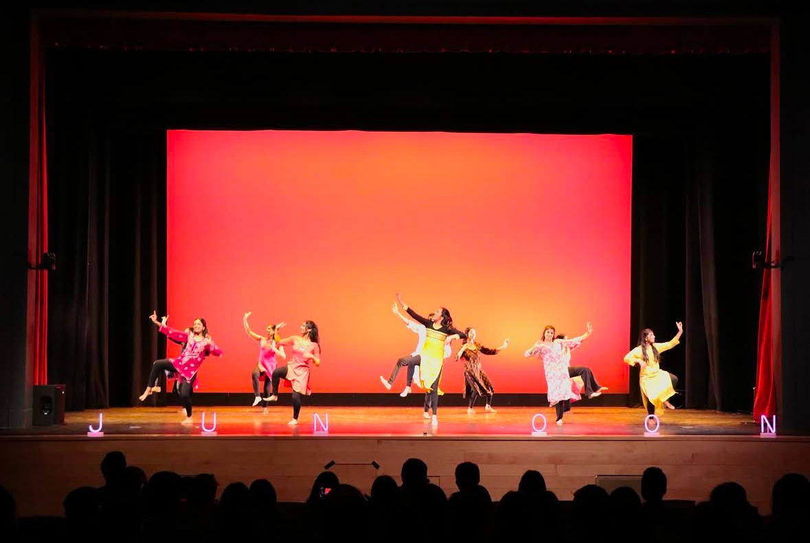

This is a picture of NU Junoon's performance at ICA, the Indian Cultural Association, last year. NU Junoon is Northeastern University's premier competitive South Asian fusion dance team, and we showcase a variety of dance styles, blending traditional and modern influences. During this performance, we incorporated multiple dance styles, including Bollywood, Hip Hop, Classical, and Bhangra. This particular photo was captured during the Bhangra segment, a high-energy folk dance originating from Punjab, known for its vibrant movements and rhythmic footwork. Performing at ICA was a memorable experience, as it allowed us to celebrate South Asian culture while engaging with a diverse audience. Our team worked hard for weeks leading up to the event, refining our choreography, synchronizing formations, and ensuring that every transition between styles was seamless. The energy in the room that night was incredible, with the audience cheering and clapping along to the beats of the dhol. Moments like these make being part of NU Junoon so special, as we not only get to share our love for dance but also connect with the community through cultural expression. I look forward to many more performances that celebrate dance, diversity, and teamwork. Below I have listed some other performances we have done
